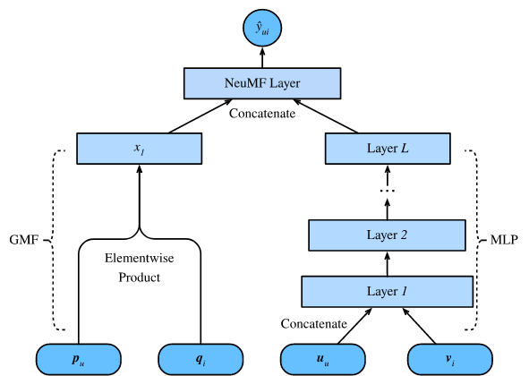

After downloading and expanding the movielens-1m dataset, we will create the dataset class as the first step.
class Rating_Datset(torch.utils.data.Dataset):
def __init__(self, user_list, item_list, rating_list):
super(Rating_Datset, self).__init__()
self.user_list = user_list
self.item_list = item_list
self.rating_list = rating_list
def __len__(self):
return len(self.user_list)
def __getitem__(self, idx):
user = self.user_list[idx]
item = self.item_list[idx]
rating = self.rating_list[idx]
return (
torch.tensor(user, dtype=torch.long),
torch.tensor(item, dtype=torch.long),
torch.tensor(rating, dtype=torch.float)
)
The name of our class is *Rating_Dataset* and it is getting inherited from PyTorch *Dataset base class. The getitem* method is helping us in 2 ways: 1) It is reinforcing the type to [long, long, float] and returning the tensor version of the tuple for the given index id.
We are also creating a helper dataset class to put all the data processing functions under a single umbrella. This class contains 5 methods:
Next, we are defining evaluation metrics. We are using Hit Rate and NDCG as our evaluation metrics.
def hit(ng_item, pred_items):
if ng_item in pred_items:
return 1
return 0
def ndcg(ng_item, pred_items):
if ng_item in pred_items:
index = pred_items.index(ng_item)
return np.reciprocal(np.log2(index+2))
return 0
def metrics(model, test_loader, top_k, device):
HR, NDCG = [], []
for user, item, label in test_loader:
user = user.to(device)
item = item.to(device)
predictions = model(user, item)
_, indices = torch.topk(predictions, top_k)
recommends = torch.take(
item, indices).cpu().numpy().tolist()
ng_item = item[0].item() # leave one-out evaluation has only one item per user
HR.append(hit(ng_item, recommends))
NDCG.append(ndcg(ng_item, recommends))
return np.mean(HR), np.mean(NDCG)
The metrics function is first loading the user and item variables to the right device (e.g. to the GPU if it is enabled), then getting predictions from the model and then finally calculating (& returning) the hit_rate_at_k and ndcg_at_k values.
After defining the dataset class and evaluation function, it is time to define the model architecture.
We are going to use Neural Collaborative Filtering for Personalized Ranking. This model leverages the flexibility and non-linearity of neural networks to replace dot products of matrix factorization, aiming at enhancing the model expressiveness. In specific, this model is structured with two subnetworks including generalized matrix factorization (GMF) and MLP and models the interactions from two pathways instead of simple inner products. The outputs of these two networks are concatenated for the final prediction scores calculation.

In this architecture, we are first creating the user and item embedding layers for both MLP and MF architectures, and with the help of PyTorch ModuleList, we are creating MLP architecture. Then, in the forward method, we are passing user and item indices list in the embedding layers and then concatenating and multiplying the MLP and MF embedding layers respectively. And finally, concatenating the MLP and MF feature layers and a logistic activation at the end.
class NeuMF(nn.Module):
def __init__(self, args, num_users, num_items):
super(NeuMF, self).__init__()
self.num_users = num_users
self.num_items = num_items
self.factor_num_mf = args.factor_num
self.factor_num_mlp = int(args.layers[0]/2)
self.layers = args.layers
self.dropout = args.dropout
self.embedding_user_mlp = nn.Embedding(num_embeddings=self.num_users, embedding_dim=self.factor_num_mlp)
self.embedding_item_mlp = nn.Embedding(num_embeddings=self.num_items, embedding_dim=self.factor_num_mlp)
self.embedding_user_mf = nn.Embedding(num_embeddings=self.num_users, embedding_dim=self.factor_num_mf)
self.embedding_item_mf = nn.Embedding(num_embeddings=self.num_items, embedding_dim=self.factor_num_mf)
self.fc_layers = nn.ModuleList()
for idx, (in_size, out_size) in enumerate(zip(args.layers[:-1], args.layers[1:])):
self.fc_layers.append(torch.nn.Linear(in_size, out_size))
self.fc_layers.append(nn.ReLU())
self.affine_output = nn.Linear(in_features=args.layers[-1] + self.factor_num_mf, out_features=1)
self.logistic = nn.Sigmoid()
self.init_weight()
def init_weight(self):
nn.init.normal_(self.embedding_user_mlp.weight, std=0.01)
nn.init.normal_(self.embedding_item_mlp.weight, std=0.01)
nn.init.normal_(self.embedding_user_mf.weight, std=0.01)
nn.init.normal_(self.embedding_item_mf.weight, std=0.01)
for m in self.fc_layers:
if isinstance(m, nn.Linear):
nn.init.xavier_uniform_(m.weight)
nn.init.xavier_uniform_(self.affine_output.weight)
for m in self.modules():
if isinstance(m, nn.Linear) and m.bias is not None:
m.bias.data.zero_()
def forward(self, user_indices, item_indices):
user_embedding_mlp = self.embedding_user_mlp(user_indices)
item_embedding_mlp = self.embedding_item_mlp(item_indices)
user_embedding_mf = self.embedding_user_mf(user_indices)
item_embedding_mf = self.embedding_item_mf(item_indices)
mlp_vector = torch.cat([user_embedding_mlp, item_embedding_mlp], dim=-1)
mf_vector =torch.mul(user_embedding_mf, item_embedding_mf)
for idx, _ in enumerate(range(len(self.fc_layers))):
mlp_vector = self.fc_layers[idx](mlp_vector)
vector = torch.cat([mlp_vector, mf_vector], dim=-1)
logits = self.affine_output(vector)
rating = self.logistic(logits)
return rating.squeeze()
We are using following hyperparameters to train the model:
args = parser.parse_args("")
device = torch.device("cuda:0" if torch.cuda.is_available() else "cpu")
writer = SummaryWriter()
# seed for Reproducibility
seed_everything(args.seed)
# load data
ml_1m = pd.read_csv(
DATA_PATH,
sep="::",
names = ['user_id', 'item_id', 'rating', 'timestamp'],
engine='python')
# set the num_users, items
num_users = ml_1m['user_id'].nunique()+1
num_items = ml_1m['item_id'].nunique()+1
# construct the train and test datasets
data = NCF_Data(args, ml_1m)
train_loader = data.get_train_instance()
test_loader = data.get_test_instance()
# set model and loss, optimizer
model = NeuMF(args, num_users, num_items)
model = model.to(device)
loss_function = nn.BCELoss()
optimizer = optim.Adam(model.parameters(), lr=args.lr)
# train, evaluation
best_hr = 0
for epoch in range(1, args.epochs+1):
model.train() # Enable dropout (if have).
start_time = time.time()
for user, item, label in train_loader:
user = user.to(device)
item = item.to(device)
label = label.to(device)
optimizer.zero_grad()
prediction = model(user, item)
loss = loss_function(prediction, label)
loss.backward()
optimizer.step()
writer.add_scalar('loss/Train_loss', loss.item(), epoch)
model.eval()
HR, NDCG = metrics(model, test_loader, args.top_k, device)
writer.add_scalar('Perfomance/HR@10', HR, epoch)
writer.add_scalar('Perfomance/NDCG@10', NDCG, epoch)
elapsed_time = time.time() - start_time
print("The time elapse of epoch {:03d}".format(epoch) + " is: " +
time.strftime("%H: %M: %S", time.gmtime(elapsed_time)))
print("HR: {:.3f}\tNDCG: {:.3f}".format(np.mean(HR), np.mean(NDCG)))
if HR > best_hr:
best_hr, best_ndcg, best_epoch = HR, NDCG, epoch
if args.out:
if not os.path.exists(MODEL_PATH):
os.mkdir(MODEL_PATH)
torch.save(model,
'{}{}.pth'.format(MODEL_PATH, MODEL))
writer.close()
Average epoch time is 90 seconds on Nvidia T4 GPU. Both hit_rate and ndcg values improves initially for first 4 epochs and then converged to a local (or global, I hope) minima.
Congratulations! You covered a lot of content and hopefully you have a better understanding of the working of neural matrix factorization model by now.